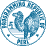

|
Barcelona Perl Mongers
Perl Festival |
||

|
Barcelona 28/Jul/2003  |
|
Mark Jason Dominus |
||
|
19:00 - Francesc Guasch -
Aplicacions Web amb Mason 20:00 - Mark Jason Dominus - Twelve Views |
||
|
Computer Architecture Department Campus Nord, building C6, room E101 Universitat Politècnica de Catalunya |
||